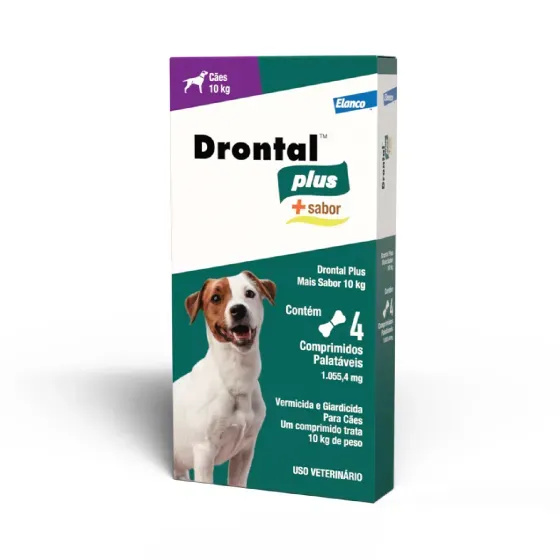
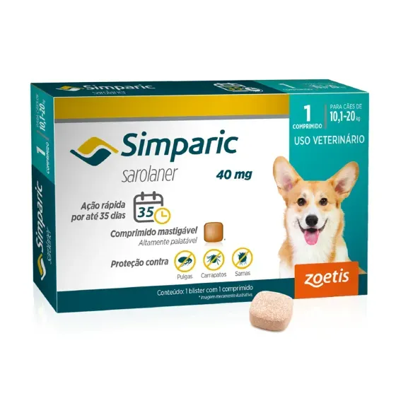
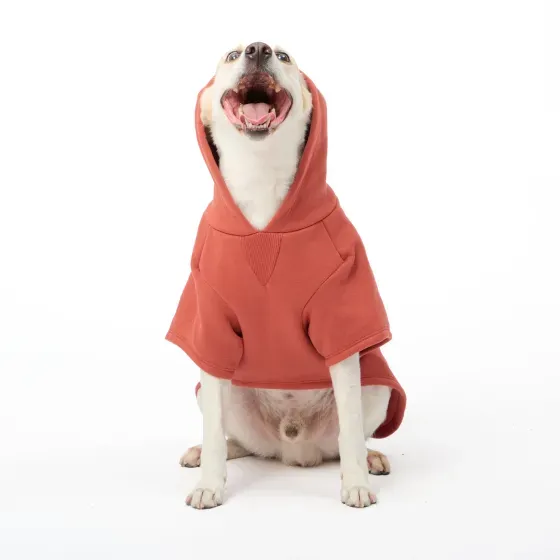
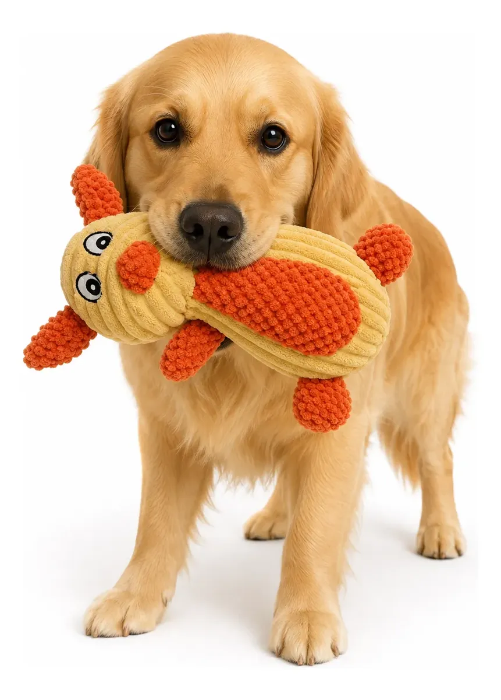
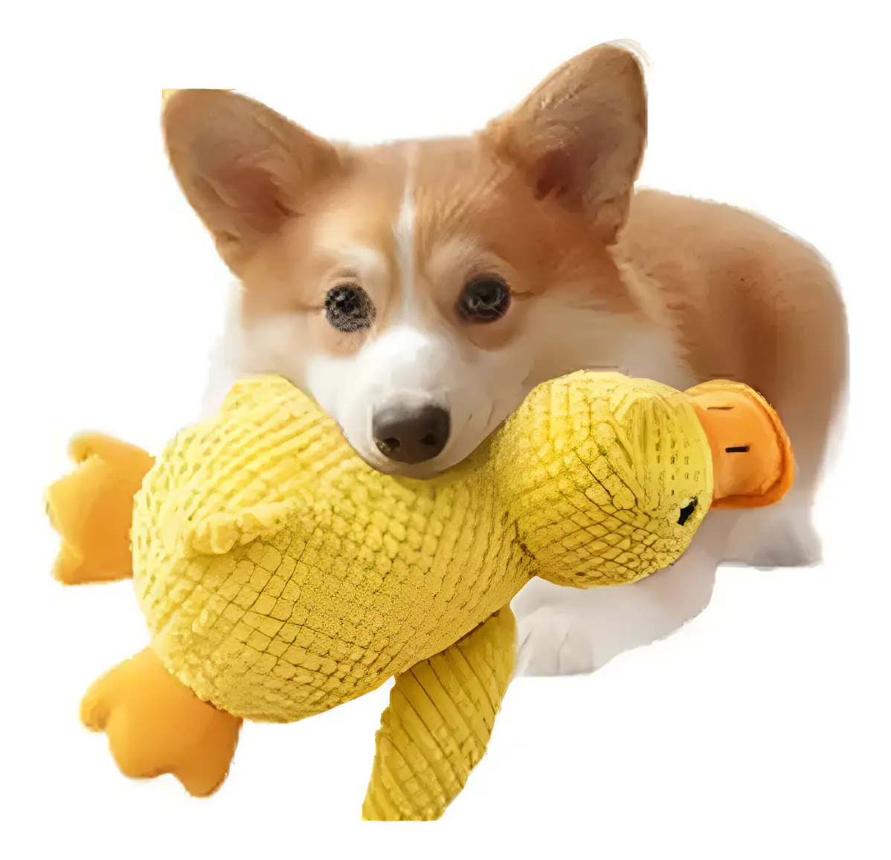
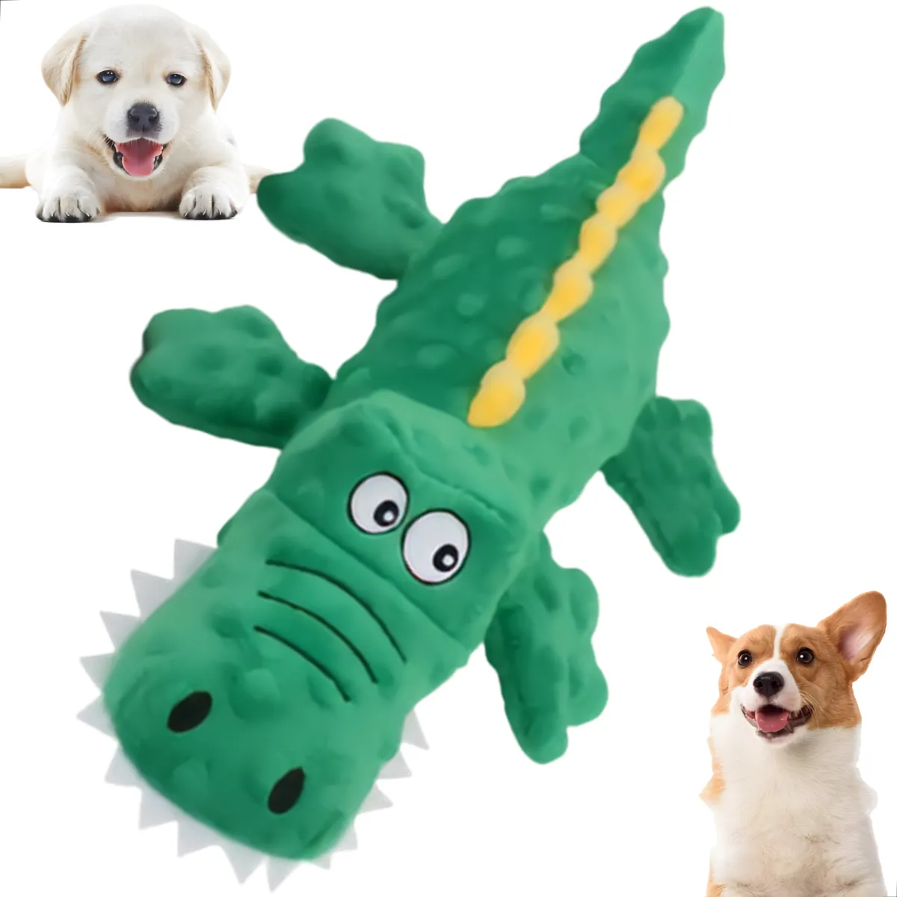

Vermífugo para cães

Vermífugo para cães, ideal para auxiliar no combate a vermes intestinais e manter seu pet saudável.
Ver detalhes
Na ItaPET, acreditamos que cuidar de um pet é também cuidar da saúde,
do bem-estar e da qualidade de vida de quem faz parte da família.
Oferecemos produtos selecionados para cães e gatos, incluindo itens de
higiene, prevenção, cuidados veterinários, alimentação e acessórios.
Nosso objetivo é facilitar o acesso dos tutores a produtos que auxiliam
na rotina de cuidados com seus animais, proporcionando mais conforto,
segurança e bem-estar para os pets.

Vermífugo para cães, ideal para auxiliar no combate a vermes intestinais e manter seu pet saudável.
Ver detalhes
Produto desenvolvido para auxiliar nos cuidados e na prevenção de parasitas em cães.
Ver detalhes
O Antipulgas Simparic 40mg é um comprimido mastigável e altamente palatável, desenvolvido para o combate e prevenção de pulgas.
Ver detalhes
Moletom felpado para dias frios, com visual moderno, capuz com ajuste e cordão, oferecendo conforto e estilo para o seu pet.
Ver detalhes
Confeccionado em tecido macio e confortável, ideal para dias mais frios, mantendo o pet aquecido sem limitar os movimentos.
Ver detalhes.webp)
Ideal para os passeios em dias chuvosos, em plástico PVC transparente, com capuz e fitas de ajuste na cintura e pescoço.
Ver detalhes
Brinquedo em pelúcia com apito, fabricado em poliéster, ideal para divertir e entreter cães e gatos de forma segura.
Ver detalhes
Brinquedo de pelúcia reforçada em formato de pato ideal para divertir cães de grande porte.
Ver detalhes
Brinquedo mordedor em pelúcia no formato de crocodilo/jacaré, com som (apito), ideal para cães e gatos.
Ver detalhes